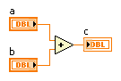
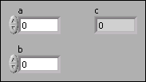
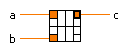
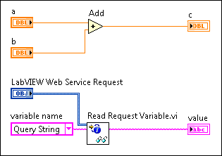

Parent Topic: Developing Web Services
|
Note��For more information about concepts in this topic, refer to the Web services introduction and tutorial. LabVIEW Web services are available only in the LabVIEW Full Development System and the LabVIEW Professional Development System. |
To create an HTTP method VI, right-click Web Resources or a web resource sub-item in the Project Explorer window and select New VI. LabVIEW opens the new VI, which contains a LabVIEW Web Service Request control you commonly use in HTTP method VIs.
Consider the guidelines in the following sections for developing HTTP method VIs.
HTTP method VIs receive and send data using their connector pane terminals. When a web client sends an HTTP request to an HTTP method VI, the VI receives values for controls on its connector pane, processes those values, and returns a response to the client.
The following figure displays an example front panel, block diagram, and connector pane for an HTTP method VI that accepts two values from a web client and returns their sum.
| Block Diagram | Front Panel | Connector Pane |
|---|---|---|
|
 |
 |
 |
Labels of controls and indicators that receive and return values in Web services can contain only letters, numbers, hyphens, and underscores available in the US ASCII character set. Labels cannot contain spaces or special characters.
Sending Data to a Deployed Application using URLs
Assigning Terminals to Controls and Indicators
By default, an HTTP method VI returns data to web clients as a JSON string. The JSON string includes a summary of the indicator values assigned to the connector pane of the HTTP method VI. You also can configure an HTTP method VI to return data as an XML-, HTML-, or plain text-formatted response. Configure the output format type on the HTTP Method VI Settings page of the Web Service Properties dialog box.
|
Note��Instead of returning data to a client via the connector pane, an HTTP method VI can stream data to a client in a custom format, such as a customized HTML page or image data. |
Configuring HTTP Headers, Streaming, and Buffering
The VIs on the Web Services palette can handle POST data, form data, HTTP sessions, cookies, and other Web-specific functionality. When you include VIs from the Web Services palette within an HTTP method VI, you must wire the LabVIEW Web Service Request input on each VI so they uniformly handle the current HTTP request. The LabVIEW Web Service Request input functions similarly to a refnum in LabVIEW.
The following figure shows the use of the LabVIEW Web Service Request input to identify the HTTP request for which the Read Request Variable VI returns data:

|
Note��You must assign the control wired to LabVIEW Web Service Request to the connector pane of the top-level HTTP method VI. |
If an HTTP method VI contains multiple VIs from the Web Services palette, you can wire a single control to the LabVIEW Web Service Request input on the first Web Services VI, and then wire the subsequent VIs together using the LabVIEW Web Service Request input and LabVIEW Web Service Request out output of each VI.
Refer to the examples\Connectivity\Web Services\Lab Notebook\Web Services - Lab Notebook.lvproj for examples of HTTP method VIs in a Web service.
 Open example�
Open example�
 Find related examples
Find related examples
HTTP method VIs can include all of the available functionality of LabVIEW that uses supported data types.